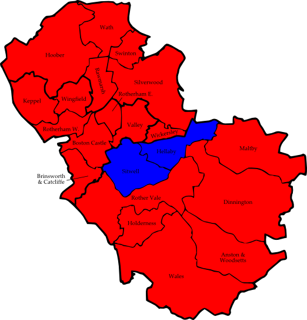

5.1 Barnsley
BIG = Barnsley Independent Group
Central
|
Margaret Bruff | Lab | 910 |
| Don Hutton | LD | 527 |
| Dennis Seilly | BNP | 347 |
| Peter Doyle | Ind | 327 |
| Gillian Millner | C | 155 |
Cudworth
|
Joseph Hayward | Lab | 1,413 |
| Ian Sanders | BIG | 900 |
| Jean Rowley | C | 149 |
Darfield
|
Trevor Smith | BIG | 1,112 |
| Caroline Saunders | Lab | 711 |
| Paul Tibble | BNP | 332 |
| Susan Garner | LD | 182 |
| Marjorie Cale-Morgan | C | 168 |
Darton East
|
Harry Spence | BIG | 1,249 |
| Thomas Cullum | Lab | 808 |
| Clive Watkinson | C | 396 |
| Patrick Logan | LD | 274 |
Darton West
|
Sharon Howard | Lab | 935 |
| Susan Simmons | BIG | 853 |
| Ian Sutton | BNP | 701 |
| Tony Short | C | 431 |
Dearne North
|
Janice Hancock | Lab | 1,011 |
| Ian Garner | LD | 453 |
| Raymond Murdoch | BIG | 234 |
| Paul Buckley | C | 129 |
Dearne South
|
May Noble | Lab | 1,158 |
| Sarah Brook-Gardiner | LD | 1,065 |
| Robert Garrett | BNP | 491 |
| Dorothy Shaw | C | 75 |
Dodworth
|
Jack Carr | BIG | 1,378 |
| Deborah Dunlop | Lab | 1,018 |
| George Hill | C | 466 |
Hoyland Milton
|
Trevor Naylor | BIG | 1,229 |
| Robin Franklin | Lab | 1,088 |
| Elizabeth Hill | C | 276 |
Kingstone
|
Donna Hollins | BIG | 1,154 |
| Alice Cave | Lab | 721 |
| Frank Watson | Ind | 148 |
| Stuart Wilkinson | C | 135 |
Monk Bretton
|
Kenneth Richardson | Lab | 906 |
| Michael Dunlavey | BIG | 557 |
| Susan Harris | BNP | 323 |
| Ken Smith | LD | 277 |
| Geoffrey Turvey | C | 185 |
North East
|
Dorothy Higginbottom | Lab | 1,680 |
| Lesley Watkinson | C | 725 |
Old Town
|
Peter Middleton | BIG | 1,479 |
| Martin Dyson | Lab | 633 |
| Lancer White | BNP | 299 |
| Grace Morrell | C | 203 |
Penistone East (2)
|
Robert Barnard | C | 1,539 |
| John Wilson | C | 1,518 |
| Jill Hayler | Lab | 929 |
| Jock Jones | Lab | 838 |
| Trish Arundel | LD | 808 |
| John Smith | Ind | 749 |
| Lisa Murdoch | BIG | 691 |
Penistone West
|
Andrew Milner | C | 1,012 |
| Paul Hand-Davis | BIG | 808 |
| Joseph Unsworth | Lab | 763 |
| Kelly Thorpe | BNP | 399 |
| Lynda Pickersgill | Grn | 281 |
Rockingham
|
James Andrews | Lab | 1,255 |
| Alison Robinson | BIG | 846 |
| Bob Hannagan | Ind | 320 |
| Michael Toon | C | 297 |
Royston
|
Tim Cheetham | Lab | 959 |
| Eddie Gouthwaite | LD | 437 |
| John Race | BIG | 464 |
| Paul Harris | BNP | 393 |
| Andrew Barr | C | 197 |
St Helens
|
David Bostwick | Lab | 905 |
| Jack Brown | Ind | 707 |
| Jack Orr | C | 197 |
Stairfoot
|
Jim Smith | BIG | 1,014 |
| Steven Redford | Lab | 871 |
| James D. Smith | BNP | 386 |
| Anne Campbell | C | 154 |
Wombwell
|
Denise Wilde | Lab | 1,347 |
| Arthur O'Loughlin | BIG | 610 |
| David Bailey | BNP | 396 |
| Garry Needham | C | 179 |
Worsbrough
|
Eunice Taylor | Lab | 965 |
| Jillian Aranyi | BIG | 566 |
| Malcolm Jennings | BNP | 395 |
| Patricia Durie | LD | 370 |
| Elizabeth Elders | C | 139 |
Consolidated Results — Barnsley
|
Labour | 20,986 | 38.3% | 12 councillors |
| Barnsley Independent Group | 14,910 | 27.2% | 7 councillors |
| Conservative | 7,207 | 13.2% | 3 councillors |
| British National Party | 4,696 | 8.6% | |
| Liberal Democrat | 4,393 | 8.0% | |
| Independents | 2,251 | 4.1% | |
| Green Party | 281 | 0.5% | |
| Figure 5.1: Barnsley 2006 |
5.2 Doncaster
CG = Community Group
DAD = Doncaster against Demolition
Adwick
|
John Mounsey | Lab | 1,960 |
| David Farrell | LD | 908 |
| Jonathan Broughton | C | 380 |
Armthorpe
|
Anthony Brown | Ind | 1,602 |
| Tony Corden | Lab | 1,260 |
| Russell Till | C | 276 |
Askern Spa
|
Roselyn Jones | Lab | 1,527 |
| Philip Bell | C | 1,160 |
| Mary Chipp | Grn | 349 |
| Julian Hurley | CG | 289 |
Balby
|
Garth Oxby | Ind | 1,325 |
| Dorothy Chamberlain | Lab | 1,196 |
| Jane Cox | C | 576 |
Bentley
|
Stuart Hardy | Lab | 1,367 |
| Charles Storey | Ind | 1,069 |
| Nicholas Lapish | C | 356 |
Bessacarr and Cantley
|
Eric Tatton-Kelly | LD | 2,440 |
| Franks Perks | Lab | 955 |
| Raja Akhtar | C | 933 |
Central
|
John McHale | Lab | 1,480 |
| Jonathan Snelling | LD | 1,271 |
| Asma Hassan | C | 329 |
| Stephen Brandon | Grn | 254 |
| Eric Tetley | DAD | 115 |
Conisbrough and Denaby
|
Sandra Holland | Lab | 1,247 |
| Carol Sellars | Ind | 915 |
| Michael Cooper | Ind | 447 |
| Patricia Wheatley | LD | 286 |
| Susan Evans | DAD | 190 |
Edenthorpe, Kirk Sandall & Barnby Dun
|
Michael Maye | Ind | 2,275 |
| Liz Jeffress | Lab | 1,153 |
| James Hart | C | 628 |
Edlington and Warmsworth
|
Elsie Butler | Lab | 1,345 |
| Raymond Mullis | Ind | 1,140 |
| Damian Edwards | C | 448 |
| Kim Rolt | Grn | 273 |
Finningley
|
Richard Jones | C | 1,832 |
| Peter Davies | EDP | 973 |
| Marie Lane | LD | 712 |
| Susan Lister | Lab | 656 |
| Adrian Hawley | Grn | 279 |
| George Sheldon | Ind | 128 |
Great North Road
|
David Hughes | Ind | 1,260 |
| Terry Rodgers | Lab | 1,099 |
| Brian Woodhouse | C | 701 |
| Thomas Platt | Grn | 561 |
Hatfield
|
Nigel Hodges | CG | 1,228 |
| Linda Curran | Lab | 1,170 |
| John Brown | C | 928 |
Mexborough
|
Edwin Simpson | LD | 1,588 |
| Paula Walford | Lab | 1,402 |
| Suzanne McNaghten | Grn | 295 |
Rossington
|
Barry Johnson | Lab | 1,373 |
| Terry Wilde | Ind | 1,042 |
| Kathleen Beard | C | 473 |
Sprotbrough
|
Doreen Woodhouse | C | 1,684 |
| Susan Williams | Lab | 767 |
| Richard Rolt | Grn | 683 |
| Stephen Coddington | LD | 442 |
Stainforth and Moorends
|
Norah Troops | Lab | 869 |
| Claire Taylor Hatem | CG | 655 |
| Martin Drake | C | 479 |
| Terry Papworth | Ind | 479 |
| Rodger Lee | Ind | 77 |
Thorne
|
Richard Walker | CG | 1,852 |
| Peter Best | Lab | 880 |
| James Nelson | C | 539 |
Torne Valley
|
Patricia Bartlett | C | 1,950 |
| Derek Markham | LD | 923 |
| Hilary McNamee | Lab | 678 |
| Jamie Gash | Grn | 257 |
| Tony Brooks | CG | 78 |
Town Moor
|
Kevin Abell | LD | 2,052 |
| Rattan Gug | Lab | 903 |
| Darren Robinson | Grn | 466 |
Wheatley
|
Kathleen Hood | Lab | 1,170 |
| Nigel Spouse | LD | 761 |
| Maurice Field | C | 754 |
| Lawrence Parramore | DAD | 246 |
Consolidated Results — Doncaster
|
Labour | 24,457 | 34.4% | 9 councillors |
| Conservative | 14,426 | 20.3% | 3 councillors |
| Independents | 11,759 | 16.5% | 4 councillors |
| Liberal Democrat | 11,383 | 16.0% | 3 councillors |
| Community Group | 4,102 | 5.8% | 2 councillors |
| Green Party | 3,417 | 4.8% | |
| English Democrats Party | 973 | 1.4% | |
| Doncaster Against Demolition | 551 | 0.8% | |
| Figure 5.2: Doncaster 2006 |
5.3 Rotherham
CPA = Christian Peoples Alliance
Anston and Woodsetts
|
Josephine Burton | Lab | 1,300 |
| Keith Hunter | C | 1,102 |
| Steven Scutt | LD | 684 |
Boston Castle
|
Rose McNeely | Lab | 1,020 |
| Irene Furnell | Ind | 1,006 |
| Christian Kramer | C | 648 |
| Patricia Shaw | LD | 621 |
Brinsworth and Catcliffe
|
Fred Wright | Lab | 1,542 |
| Stanley Burgess | LD | 823 |
| Raymond Philips | C | 488 |
Dinnington
|
David Davies | Lab | 1,238 |
| Nigel Lee | C | 827 |
| George Hardwick | LD | 555 |
Hellaby
|
Lynda Binnie | C | 1,229 |
| Timothy Bowmar | Lab | 881 |
| John Wilkinson | UKIP | 576 |
| Donald Ross | LD | 575 |
Holderness
|
Gerald Smith | Lab | 1,327 |
| Roger Beaverstock | LD | 970 |
| Paul Martin | CPA | 533 |
Hoober
|
Richard Russell | Lab | 1,208 |
| Christopher-John Dannatt | BNP | 641 |
| Jon Fleming-Smith | C | 523 |
| Ann Jones | LD | 425 |
Keppel
|
Ian Barron | Lab | 1,110 |
| Marlene Guest | BNP | 936 |
| Annette Kelly | LD | 882 |
| Christopher Middleton | C | 450 |
Maltby
|
Amy Rushforth | Lab | 1,124 |
| Keith Stringer | Ind | 1,018 |
| Eric Broadhead | LD | 558 |
Rawmarsh
|
Shaun Wright | Lab | 1,399 |
| Paul Shaw | LD | 643 |
| David Tiptaft | C | 524 |
Rother Vale
|
Georgina Boyes | Lab | 1,078 |
| Vera Brockbank | Ind | 754 |
| Gisela Bryden | LD | 518 |
Rotherham East
|
Shaukat Ali | Lab | 1,329 |
| Mohd Ilyas | LD | 745 |
Rotherham West
|
Jahangir Akhtar | Lab | 1,205 |
| Cav Vines | Ind | 1,137 |
| Lee Ridsdale | LD | 634 |
Silverwood
|
Patricia Russell | Lab | 1,212 |
| Eric Shaw | LD | 840 |
| James Gelder | C | 698 |
Sitwell
|
Anthony Mannion | C | 1,714 |
| Alan Bryden | LD | 1,154 |
| John Foden | Lab | 914 |
Swinton
|
Neil License | Lab | 1,547 |
| Martyn Parker | LD | 662 |
| Brian Taylor | C | 554 |
Valley
|
Dave Pickering | Lab | 1,235 |
| Lucie Brittain | C | 583 |
| Paul Turner | LD | 499 |
| Kath Reeder | Ind | 375 |
Wales
|
Jennifer Whysall | Lab | 1,168 |
| Gavin Sharp | C | 1,045 |
| Bernard Baber | LD | 555 |
Wath
|
Alan Atkin | Lab | 1,498 |
| Jennifer Tiptaft | C | 611 |
| Daniel Gallacher | LD | 562 |
Wickersley
|
Beryl Billington | Lab | 1,227 |
| Gabrielle Colley | C | 1,172 |
| Peter Ward | LD | 773 |
Wingfield
|
Keith Goulty | Lab | 1,200 |
| David Newey | Ind | 445 |
| John Beaumont | LD | 440 |
| Harry Gresser | Ind | 333 |
| Basil Hammond | C | 315 |
Consolidated Results — Rotherham
|
Labour | 25,762 | 42.9% | 19 councillors |
| Liberal Democrat | 14,118 | 23.5% | |
| Conservative | 12,483 | 20.8% | 2 councillors |
| Independents | 5,068 | 8.4% | |
| British National Party | 1,577 | 2.6% | |
| UK Independence Party | 576 | 1.0% | |
| Christian Peoples Alliance | 533 | 0.9% | |

| Figure 5.3: Rotherham 2006 |
5.4 Sheffield
CPA = Christian Peoples Alliance
Arbourthorne
|
Timothy Rippon | Lab | 1,695 |
| Tony Bennett | LD | 872 |
| Peter Smith | C | 451 |
| Alexa Walker | Grn | 288 |
| Kyle Spotswood | CPA | 121 |
Beauchief and Greenhill
|
Clive Skelton | LD | 2,134 |
| Steven Wilson | Lab | 1,852 |
| Michelle Grant | C | 628 |
| John Beatson | BNP | 567 |
| David Hayes | Grn | 327 |
Beighton
|
Helen Mirfin-Boukouris | Lab | 1,655 |
| Shirley Clayton | C | 745 |
| Roy James | BNP | 659 |
| Allan Wisbey | LD | 564 |
| Andrew Brandram | Grn | 255 |
Birley
|
Mike Pye | Lab | 2,018 |
| Angela Hill | LD | 766 |
| Gordon Millward | C | 543 |
| Sally Stracey | UKIP | 396 |
| Frank Plunkett | Grn | 346 |
Broomhill
|
Shaffaq Mohammed | LD | 1,239 |
| Rob Cole | Grn | 730 |
| Jennifer Armstrong | Lab | 581 |
| Michael Ginn | C | 426 |
Burngreave
|
Steve Jones | Lab | 2,278 |
| Maxine Bowler | Respect | 1,208 |
| Russell Cutts | C | 425 |
| Christopher Sissons | Grn | 401 |
| Tasadique Mohammed | LD | 350 |
Central
|
Bernard Little | Grn | 1,159 |
| Mohammad Maroof | Lab | 1,117 |
| Mohammad Azim | LD | 1,036 |
| Nicholas Bryan | C | 239 |
Crookes
|
Sylvia Anginotti | LD | 2,470 |
| David Robinson | C | 939 |
| Felicity Matthews | Lab | 823 |
| Julian Briggs | Grn | 730 |
| Stuart Johnson | CPA | 116 |
Darnall
|
Mazher Iqbal | Lab | 2,338 |
| John Bowden | LD | 732 |
| Charlotte Arnott | UKIP | 482 |
| Anne Corke | C | 385 |
| Julie White | Grn | 333 |
Dore and Totley
|
Keith Hill | LD | 3,770 |
| Janet Chapman | C | 2,623 |
| Mohammad Hussain | Lab | 300 |
| Dawn Biram | Grn | 274 |
| James Laurie | UKIP | 172 |
East Ecclesfield
|
Graham Oxley | LD | 2,039 |
| Adele Jagger | Lab | 1,565 |
| Miles Waters | C | 441 |
| Mia Safir | Grn | 378 |
Ecclesall (2)
|
Roger Davison | LD | 3,449 |
| Michael Reynolds | LD | 3,281 |
| Michael Young | C | 1,617 |
| Daniel Young | C | 1,586 |
| Arun Mather | Grn | 789 |
| Jim Lafferty | Lab | 587 |
| Robert Murphy | Grn | 573 |
| Neil Cleeveley | Lab | 480 |
| Sidney Cordle | CPA | 158 |
Firth Park
|
Alan Law | Lab | 1,854 |
| John Tomlinson | LD | 641 |
| Steven Marshall | Grn | 441 |
| Paul Rymill | C | 437 |
Fulwood
|
Janice Sidebottom | LD | 2,541 |
| Caroline Cooper | C | 1,818 |
| Laura Anderson | Grn | 450 |
| Martin Newsome | Lab | 436 |
| Nigel James | UKIP | 137 |
Gleadless Valley
|
Garry Weatherall | Lab | 1,701 |
| Denise Reaney | LD | 1,652 |
| Rob Unwin | Grn | 981 |
| Amy Taylor | C | 348 |
Graves Park
|
Bob McCann | LD | 1,935 |
| Robert Pemberton | Lab | 1,389 |
| Trevor Grant | C | 775 |
| Rita Wilcock | Grn | 499 |
| Pauline Arnott | UKIP | 272 |
| Celvin Payne | Soc Alt | 206 |
Hillsborough
|
Janet Bragg | Lab | 1,882 |
| Steve Ayris | LD | 1,667 |
| Christopher McMahon | Grn | 568 |
| Peter Smith | C | 433 |
Manor Castle
|
Jan Wilson | Lab | 1,604 |
| Graham Wroe | Grn | 473 |
| Colin France | LD | 363 |
| Christina Stark | C | 316 |
Mosborough
|
Samuel Wall | Lab | 1,623 |
| Chris Tutt | LD | 1,125 |
| Evelyn Millward | C | 696 |
| John Marshall | UKIP | 308 |
| Heather Hunt | Grn | 224 |
Nether Edge
|
Patricia White | LD | 2,163 |
| Basheer Khan | Lab | 1,743 |
| Mervyn Smith | Grn | 986 |
| Rosita Malandrinos | C | 466 |
Richmond
|
Elizabeth Naylor | Lab | 1,832 |
| Judith Webster | LD | 741 |
| Leslie Arnott | UKIP | 508 |
| Ian Fey | C | 438 |
| Eamonn Ward | Grn | 289 |
Shiregreen and Brightside
|
Peter Rippon | Lab | 1,883 |
| Christopher Hartigan | BNP | 1,015 |
| Barbara Masters | LD | 431 |
| Mohammed Tariq | C | 317 |
| Jennyfer Barnard | Grn | 239 |
Southey
|
Gillian Furniss | Lab | 1,602 |
| David Wright | BNP | 665 |
| Richard Bowden | LD | 377 |
| Robert McIlveen | C | 350 |
| Mark Wilde | Ind | 337 |
| Steven Barnard | Grn | 144 |
Stannington
|
David Baker | LD | 2,421 |
| Louise Webb | Lab | 1,428 |
| Matthew Dixon | C | 803 |
| Michael Maas | Grn | 512 |
Stocksbridge and Upper Don
|
Alison Brelsford | LD | 2,201 |
| Christopher Prescott | Lab | 1,094 |
| Timothy Lewis | C | 736 |
| Angela Roberts | Grn | 549 |
Walkley
|
Jonathan Harston | LD | 1,863 |
| Jim Bamford | Lab | 1,783 |
| Barry New | Grn | 625 |
| Andrew Gabbitas | C | 313 |
West Ecclesfield
|
Trevor Bagshaw | LD | 2,388 |
| Sheila Constance | Lab | 1,562 |
| Paula Axelby | C | 511 |
| Kathryn Aston | Grn | 353 |
Woodhouse
|
Raymond Satur | Lab | 1,966 |
| Robert Moffett | LD | 603 |
| Jonathan Arnott | UKIP | 574 |
| Laurence Hayward | C | 546 |
| Daniel Lyons | Grn | 278 |
Consolidated Results — Sheffield
|
Liberal Democrat | 42,533 | 34.0% | 14 councillors |
| Labour | 42,191 | 33.7% | 14 councillors |
| Conservative | 18,765 | 15.0% | |
| Green Party | 13,621 | 10.9% | 1 councillor |
| British National Party | 2,906 | 2.3% | |
| UK Independence Party | 2,849 | 2.3% | |
| Respect — The Unity Coalition | 1,208 | 1.0% | |
| Christian Peoples Alliance | 395 | 0.3% | |
| Independent | 337 | 0.3% | |
| Socialist Alternative | 206 | 0.2% | |
| Figure 5.4: Sheffield 2006 |